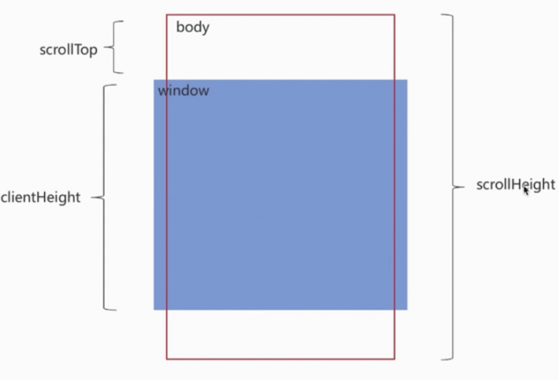

如何实现上拉加载，下拉刷新？
参考答案
一、前言
下拉刷新和上拉加载这两种交互方式通常出现在移动端中
本质上等同于PC网页中的分页，只是交互形式不同
开源社区也有很多优秀的解决方案，如iscroll、better-scroll、pulltorefresh.js库等等
这些第三方库使用起来非常便捷
我们通过原生的方式实现一次上拉加载，下拉刷新，有助于对第三方库有更好的理解与使用
二、实现原理
上拉加载及下拉刷新都依赖于用户交互
最重要的是要理解在什么场景，什么时机下触发交互动作
上拉加载
首先可以看一张图

上拉加载的本质是页面触底，或者快要触底时的动作
判断页面触底我们需要先了解一下下面几个属性
scrollTop：滚动视窗的高度距离window顶部的距离，它会随着往上滚动而不断增加，初始值是0，它是一个变化的值
clientHeight:它是一个定值，表示屏幕可视区域的高度；scrollHeight：页面不能滚动时是不存在的，body长度超过window时才会出现，所表示body所有元素的长度
综上我们得出一个触底公式：
scrollTop + clientHeight >= scrollHeight简单实现
let clientHeight = document.documentElement.clientHeight; //浏览器高度
let scrollHeight = document.body.scrollHeight;
let scrollTop = document.documentElement.scrollTop;
let distance = 50; //距离视窗还用50的时候，开始触发；
if ((scrollTop + clientHeight) >= (scrollHeight - distance)) {
console.log("开始加载数据");
}下拉刷新
下拉刷新的本质是页面本身置于顶部时，用户下拉时需要触发的动作
关于下拉刷新的原生实现，主要分成三步：
- 监听原生
touchstart事件，记录其初始位置的值，e.touches[0].pageY； - 监听原生
touchmove事件，记录并计算当前滑动的位置值与初始位置值的差值，大于0表示向下拉动，并借助CSS3的translateY属性使元素跟随手势向下滑动对应的差值，同时也应设置一个允许滑动的最大值； - 监听原生
touchend事件，若此时元素滑动达到最大值，则触发callback，同时将translateY重设为0，元素回到初始位置
举个例子：
Html结构如下：
<main>
<p class="refreshText"></p >
<ul id="refreshContainer">
<li>111</li>
<li>222</li>
<li>333</li>
<li>444</li>
<li>555</li>
...
</ul>
</main>监听touchstart事件，记录初始的值
var _element = document.getElementById('refreshContainer'),
_refreshText = document.querySelector('.refreshText'),
_startPos = 0, // 初始的值
_transitionHeight = 0; // 移动的距离
_element.addEventListener('touchstart', function(e) {
_startPos = e.touches[0].pageY; // 记录初始位置
_element.style.position = 'relative';
_element.style.transition = 'transform 0s';
}, false);监听touchmove移动事件，记录滑动差值
_element.addEventListener('touchmove', function(e) {
// e.touches[0].pageY 当前位置
_transitionHeight = e.touches[0].pageY - _startPos; // 记录差值
if (_transitionHeight > 0 && _transitionHeight < 60) {
_refreshText.innerText = '下拉刷新';
_element.style.transform = 'translateY('+_transitionHeight+'px)';
if (_transitionHeight > 55) {
_refreshText.innerText = '释放更新';
}
}
}, false);最后，就是监听touchend离开的事件
_element.addEventListener('touchend', function(e) {
_element.style.transition = 'transform 0.5s ease 1s';
_element.style.transform = 'translateY(0px)';
_refreshText.innerText = '更新中...';
// todo...
}, false);从上面可以看到，在下拉到松手的过程中，经历了三个阶段：
- 当前手势滑动位置与初始位置差值大于零时，提示正在进行下拉刷新操作
- 下拉到一定值时，显示松手释放后的操作提示
- 下拉到达设定最大值松手时，执行回调，提示正在进行更新操作
三、案例
在实际开发中，我们更多的是使用第三方库，下面以better-scroll进行举例：
HTML结构
<div id="position-wrapper">
<div>
<p class="refresh">下拉刷新</p >
<div class="position-list">
<!--列表内容-->
</div>
<p class="more">查看更多</p >
</div>
</div>实例化上拉下拉插件，通过use来注册插件
import BScroll from "@better-scroll/core";
import PullDown from "@better-scroll/pull-down";
import PullUp from '@better-scroll/pull-up';
BScroll.use(PullDown);
BScroll.use(PullUp);实例化BetterScroll，并传入相关的参数
let pageNo = 1,pageSize = 10,dataList = [],isMore = true;
var scroll= new BScroll("#position-wrapper",{
scrollY:true,//垂直方向滚动
click:true,//默认会阻止浏览器的原生click事件，如果需要点击，这里要设为true
pullUpLoad:true,//上拉加载更多
pullDownRefresh:{
threshold:50,//触发pullingDown事件的位置
stop:0//下拉回弹后停留的位置
}
});
//监听下拉刷新
scroll.on("pullingDown",pullingDownHandler);
//监测实时滚动
scroll.on("scroll",scrollHandler);
//上拉加载更多
scroll.on("pullingUp",pullingUpHandler);
async function pullingDownHandler(){
dataList=[];
pageNo=1;
isMore=true;
$(".more").text("查看更多");
await getlist();//请求数据
scroll.finishPullDown();//每次下拉结束后，需要执行这个操作
scroll.refresh();//当滚动区域的dom结构有变化时，需要执行这个操作
}
async function pullingUpHandler(){
if(!isMore){
$(".more").text("没有更多数据了");
scroll.finishPullUp();//每次上拉结束后，需要执行这个操作
return;
}
pageNo++;
await this.getlist();//请求数据
scroll.finishPullUp();//每次上拉结束后，需要执行这个操作
scroll.refresh();//当滚动区域的dom结构有变化时，需要执行这个操作
}
function scrollHandler(){
if(this.y>50) $('.refresh').text("松手开始加载");
else $('.refresh').text("下拉刷新");
}
function getlist(){
//返回的数据
let result=....;
dataList=dataList.concat(result);
//判断是否已加载完
if(result.length<pageSize) isMore=false;
//将dataList渲染到html内容中
} 注意点：
使用better-scroll 实现下拉刷新、上拉加载时要注意以下几点：
wrapper里必须只有一个子元素- 子元素的高度要比
wrapper要高 - 使用的时候，要确定
DOM元素是否已经生成，必须要等到DOM渲染完成后，再new BScroll() - 滚动区域的
DOM元素结构有变化后，需要执行刷新refresh() - 上拉或者下拉，结束后，需要执行
finishPullUp()或者finishPullDown()，否则将不会执行下次操作 better-scroll，默认会阻止浏览器的原生click事件，如果滚动内容区要添加点击事件，需要在实例化属性里设置click:true
小结
下拉刷新、上拉加载原理本身都很简单，真正复杂的是封装过程中，要考虑的兼容性、易用性、性能等诸多细节
- 下拉刷新 通过监听触摸事件，检测下拉距离，触发数据刷新，适用于移动设备上的刷新操作。
- 上拉加载 通过监听滚动事件，检测用户是否接近底部，触发加载更多数据，适用于滚动时加载更多内容的操作。
- 这两个功能的实现需要处理触发条件、数据请求、界面更新等操作，以提供流畅的用户体验。